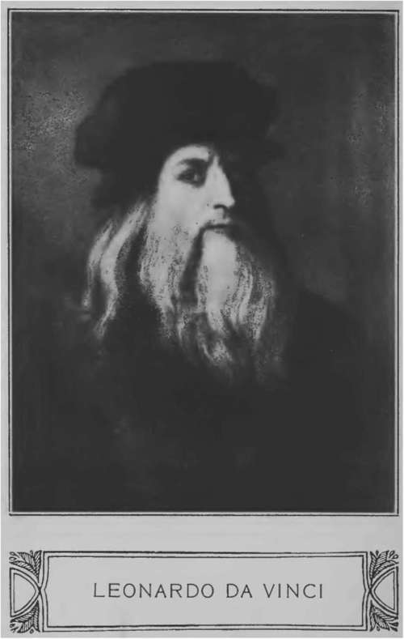

Chapter I. Leonardo Da Vinci
Description
This section is from the book "Leonardo Da Vinci: A Psychosexual Study Of An Infantile Reminiscence", by Sigmund Freud. Also available from Amazon: Leonardo da Vinci: A Psychosexual Study of an Infantile Reminiscence.
Chapter I. Leonardo Da Vinci
When psychoanalytic investigation, which usually contents itself with frail human material, approaches the great personages of humanity, it is not impelled to it by motives which are often attributed to it by laymen. It does not strive "to blacken the radiant and to drag the sublime into the mire"; it finds no satisfaction in diminishing the distance between the perfection of the great and the inadequacy of the ordinary objects. But it cannot help finding that everything is worthy of understanding that can be perceived through those prototypes, and it also believes that none is so big as to be ashamed of being subject to the laws which control the normal and morbid actions with the same strictness.
Leonardo da Vinci (1452-1519) was admired even by his contemporaries as one of the greatest men of the Italian Renaissance. Still, even then he appealed as mysterious to them as he now appears to us. An all-sided genius, "whose form can only be divined but never deeply fathomed,"5 he exerted the most decisive influence on his time as an artist; and it remained to us to recognize his greatness as a naturalist which was united in him with the artist. Although he left masterpieces of the art of painting, while his scientific discoveries remained unpublished and unused, the investigator in him has never quite left the artist, often it has severely injured the artist and in the end it has perhaps suppressed the artist altogether. According to Vasari, Leonardo reproached himself during the last hour of his life for having insulted God and men because he had not done his duty to his art.1 And even if Vasari's story lacks all probability and belongs to those legends which began to be woven about the mystic master while he was still living, it nevertheless retains indisputable value as a testimonial of the judgment of those people and of those times.
What was it that removed the personality of Leonardo from the understanding of his contemporaries? Certainly not the many sided-ness of his capacities and knowledge, which allowed him to install himself as a player of the lyre on an instrument invented by himself, in the court of Lodovico Sforza, nicknamed II Moro, the Duke of Milan, or which allowed him to write to the same person that remarkable letter in which he boasts of his abilities as a civil and military engineer. For the combination of manifold talents in the same person was not unusual in the times of the Renaissance; to be sure Leonardo himself furnished one of the most splendid examples of such persons. Nor did he belong to that type of genial persons who are outwardly poorly endowed by nature, and who on their side place no value on the outer forms of life, and in the painful gloominess of their feelings fly from human relations. On the contrary he was tall and symmetrically built, of consummate beauty of countenance and of unusual physical strength, he was charming in his manner, a master of speech, and jovial and affectionate to everybody. He loved beauty in the objects of his surroundings, he was fond of wearing magnificent garments and appreciated every refinement of conduct. In his treatise5 on the art of painting he compares in a significant passage the art of painting with its sister arts and thus discusses the difficulties of the sculptor: "Now his face is entirely smeared and powdered with marble dust, so that he looks like a baker, he is covered with small marble splinters, so that it seems as if it snowed on his back, and his house is full of stone splinters, and dust The case of the painter is quite different from that; for the painter is well dressed and sits with great comfort before his work, he gently and very lightly brushes in the beautiful colors. He wears as decorative clothes as he likes, and his house is filled with beautiful paintings and is spotlessly clean. He often enjoys company, music, or some one may read for him various nice works, and all this can be listened to with great pleasure, undisturbed by any pounding from the hammer and other noises."
It is quite possible that the conception of a beaming jovial and happy Leonardo was true only for the first and longer period of the master's life. From now on, when the downfall of the rule of Lodovico Moro forced him to leave Milan, his sphere of action and his assured position, to lead an unsteady and unsuccessful life until his last asylum in France, it is possible that the luster of his disposition became pale and some odd features of his character became more prominent. The turning of his interest from his art to science which increased with age must also have been responsible for widening the gap between himself and his contemporaries. All his efforts with which, according to their opinion, he wasted his time instead of diligently filling orders and becoming as rich as perhaps his former classmate Perugino, seemed to his contemporaries as capricious playing, or even caused them to suspect him of being in the service of the "black art." We who know him from his sketches understand him better. In a time in which the authority of the church began to be substituted by that of antiquity and in which only theoretical investigation existed, he the forerunner, or better the worthy competitor of Bacon and Copernicus, was necessarily isolated. When he dissected cadavers of horses and human beings, and built flying apparatus, or when he studied the nourishment of plants and their behavior towards poisons, he naturally deviated much from the commentators of Aristotle and came nearer the despised alchemists, in whose laboratories the experimental investigations found some refuge during these unfavorable times.
The effect that this had on his paintings was that he disliked to handle the brush, he painted less and what was more often the case, the things he began were mostly left unfinished; he cared less and less for the future fate of his works. It was this mode of working that was held up to him as a reproach from his contemporaries to whom his behavior to his art remained a riddle.
Continue to:
Tags
Leonardo da Vinci, Sigmund Freud, mentality, psychoanalytic, sexuality